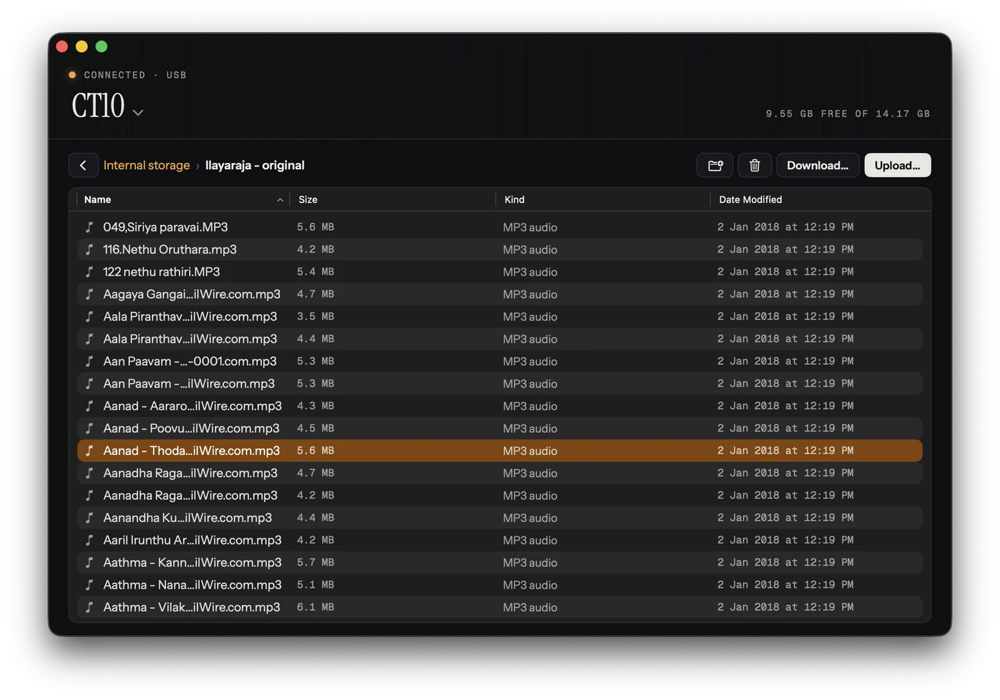

Connected · Activo CT10
Plug it in.
Your music moves.
A small, native Mac app for copying files to and from your music player or Android phone over USB. Free. No accounts, no network, no fuss.
Download for MacVersion 1.0.21.4 MBApple SiliconmacOS 12 or later

Specs
- ConnectionUSB, detected the moment you plug inAndroid phones and MTP music players. Tested with the Activo CT10, Redmi A5 and Moto G86.
- TransfersDrag in, drag out, any sizeHi-res audio and whole album folders, with progress and cancel for every transfer.
- On the deviceNew folder, rename, deleteInternal storage and SD cards.
- PrivacyNo network access. No telemetry. No account.It only ever talks to the USB port.
Install
- Step 01Open
MTPTool-1.0.2.dmgand drag MTP Tool into Applications. - Step 02Open MTP Tool. macOS says it can't verify the app. Click Done.
- Step 03Open System Settings → Privacy & Security, scroll down, and click Open Anyway next to MTP Tool.
- Step 04Open MTP Tool again and confirm. From then on it opens normally.
The warning appears because the app isn't signed with a paid Apple Developer ID. Quit Android File Transfer or MacDroid first; they lock the device while running.
Verify & source
- ChecksumsSHA256SUMS.txtTo check your download, run
shasum -a 256 ~/Downloads/MTPTool-1.0.2.dmgin Terminal. - libusb 1.0.30Source codeLGPL 2.1, unmodified.
- libmtp 1.1.23Source codeLGPL 2.1, modified. The changes are described in the included
NOTICE.txtand patch.